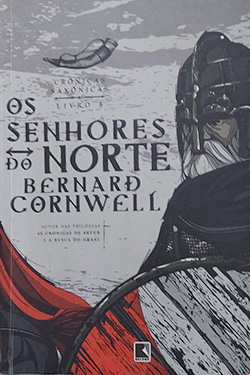

Os senhores do Norte (Crôncias Saxônicas: Livro 3) - Bernard Cornwell
Sobre o livro:
O terceiro volume das Crônicas Saxônicas, saga de Bernard Cornwell que inspirou a série da Netflix The last kingdom, começa logo após os acontecimentos descritos em O cavaleiro da morte.
Os senhores do norte é uma história poderosa feita de traição, romance e luta. Numa região de conflitos e levantes em que Uhtred, um nortumbriano criado como viking, homem sem terras, guerreiro sem país, se tornou uma esplêndida figura heróica.
O ano é 878 e o reino de Wessex de Alfredo está livre dos vikings. Depois de lutar ao lado do rei na batalha que assegurou Wessex como único reino independente da Inglaterra, Uhtred precisa voltar ao norte para vingar a morte do pai adotivo e resgatar a irmã. Para isso, terá de enfrentar seu velho inimigo, Kjartan, um renegado chefe dinamarquês que o espreita na formidável fortaleza de Dunholm.
Para Uhtred, a esperança reside na espada. Em seu caminho, encontrará rebelião, caos e medo, e terá como companhia uma freira saxã que deixou para trás a vocação religiosa. Em nome do poder, o jovem da Nortúmbria será traído por um de seus aliados, se tornando escravo... e contará com a inesperada ajuda daquele que um dia odiou. Ele enfim retorna ao Norte para acertar contas e tomar sua vingança há muito adiada, finalmente, na parede de escudo.
Os senhores do norte é impressionante na forma. Consegue mostrar ainda mais crueldade e traição do que os volumes anteriores da série, sem mencionar uma inesperada reviravolta na trama.
O toque magistral de Cornwell em descrever guerras e guerreiros não o abandonou aqui, e a batalha final é tão satisfatória quanto bárbara e sangrenta. A saga de Uhtred é sombria, o caminho é encharcado de sangue e politicamente incorreto, mas também é animador, comovente e até filosófico. O destino, como somos lembrados repetidamente, é inexorável.
The Last Kingdom, série televisiva baseada em Crônicas Saxônicas, teve sua estreia em 2015 pela BBC. Já a segunda temporada foi coproduzida pela Netflix que, a partir daí, começou a também transmitir a série via streaming. Na produção podemos acompanhar as aventuras do protagonista Uhtred em busca da sua identidade nesta grande guerra.
Imagens:
Onde Encontrar?
Estante 01, Prateleira 02, Seção C
Código do Livro
3210
Outras informações:
- Número de páginas: 347;
- Autor: Bernard Cornwell (1944-);
- Editora: Record